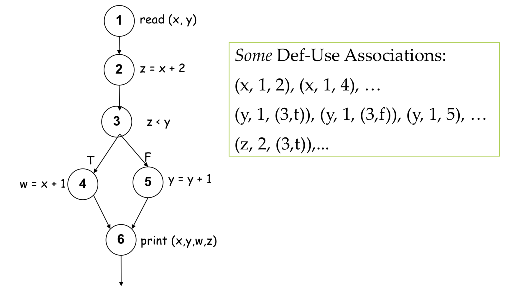

软件测试（二）白盒测试
白盒测试（White-Box Testing）
- 基本原理：基于过程设计的控制结构导出测试用例。
- 白盒测试分类
- Control Flow-Testing
- 逻辑分支覆盖法
- 语句覆盖、判定覆盖、条件覆盖、判定/条件覆盖、条件组合覆盖
- 路径法
- 路径覆盖、基本（独立）路径测试法
- 逻辑分支覆盖法
- DataFlow-Testing
- Control Flow-Testing
控制流测试
逻辑分支覆盖法
1. 语句覆盖（statement）
概念
- 语句覆盖就是设计若干个测试用例，运行被测程序，使得每一可执行语句至少执行一次。
- 这种覆盖又称为点覆盖，它使得程序中每个可执行语句都得到执行，但它是最弱的逻辑覆盖，效果有限，必须与其它方法交互使用。
示例
2. 判定覆盖（Decision Coverage, Branch Coverage）
- 概念
- 判定覆盖就是设计若干个测试用例，运行被测程序，使得程序中每个判断的取真分支和取假分支至少经历一次。判定覆盖又称为分支覆盖。
3. 条件覆盖（Condition Coverage）
- 概念
- 条件覆盖就是设计若干个测试用例，运行被测程序，使得程序中每个判断的每个条件的可能取值至少执行一次。
- 关系
- 条件覆盖深入到判定中的每个条件，但可能不满足判定覆盖
4. 判定/条件覆盖
- 概念
- 判定-条件覆盖要求设计足够的测试用例，使得判定中每个条件的所有可能 （真/假）至少出现一次，并且每个判定本身的判定结果（真/假）也至少出现一次。
- 复合判定：改为单个条件判定
5. 条件组合覆盖
概念
- 条件组合覆盖就是设计足够的测试用例，运行被测程序，使得每个判断的所有可能的条件取值组合至少执行一次。
关系
- 满足“条件组合覆盖”的测试用 例是一定满足“判定覆盖”、“条件覆盖”和“判定-条件覆盖”的。
示例
路径法
1. 路径覆盖（Path Coverage）
- 概念
- 路径测试就是设计足够的测试用例，覆盖程序中所有可能的路径。这是最强的覆盖准则。但在路径数目很大时，真正做到完全覆盖是很困难的，必须把覆盖路径数目压缩到一定限度。
- 保证程序中每条可能的路径都至少执行一次，因此更具代表性，暴露错误的能力也比较强。
- 但为了做到路径覆盖，只需考虑每个判定式的取值组合，并没有检验表达式中条件的各种可能组合。如果将路径覆盖和条件组合覆盖结合起来，可以设计出检错能力更强的测试数据。
2. 基本（独立）路径测试法
- 概念
- 独立路径：从入口到出口的路径，至少经历一个从未走过的边。这样形成的路径叫独立路径。
- 步骤
- 根据程序的逻辑结构画出程序框图
- 根据程序框图导出流图
- 计算流图G的环路复杂度$V(G)$
- 流图的区域数量应该对应于环复杂度
- 给定流图G的环复杂度定义为：$V(G)=E-N+2$
- E为流图中的边数量，N为流图中的节点数量
- 给定流图G的环复杂度也可以定义为：$V(G)=P+1$
- P为流图中的判断节点数量
- 确定只包含独立路径的基本路径集
- 设计测试用例
数据流测试
含义：数据流测试使用控制流图来进行测试。
- 能填补路径和分支测试的缝隙
数据对象类别：
- （d）：Defined, Created, Initialized
- （k）：Killed, Undefined, Released
- （u）：Used
- （c）：Used in a calculation
- （p）：Used in a predicate
路径段（du Path Segments）
Def-use Association: $(x , d, u)$
- x: 变量
- d: 含有x定义的节点
- u: 含有x使用的判断或语句
- 路径段中不存在其它x的定义
例子

数据流测试策略：ADUP（All du Paths）
- 找出测试所有的du paths路径
终极示例
- 其实就是课程作业啦…
【题目】
scanf("%d %d",&x, &y);
if (y < 0 and x>0)
pow = -y;
else
pow = y;
z = 1.0;
while (pow != 0) {
z = z * x;
pow = pow - 1;
}
if (y < 0 and z>0)
z = 1.0 / z;
printf ("%f",z);用判定条件覆盖法、基本路径法完成测试用例设计（要求画程序流程图和控制流图）
【答案】
程序流程图
控制流图
判定条件覆盖法
基本路径法
本因有四条基本路径，但由于判定1与判定3存在矛盾，所以无法找出四条基本路径的实际用例。
测试序号 测试路径 输入(x, y) 理想输出(z) 1 abdefhjk (1, 0) 1.0 2 abdefgfhjk (-1, -1) -1.0 3 abcefgfhijk (1, -1) 1.0 4